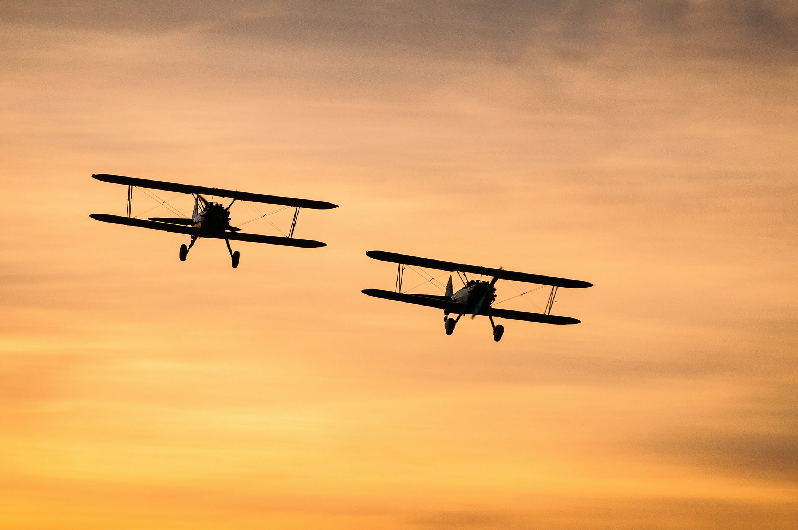
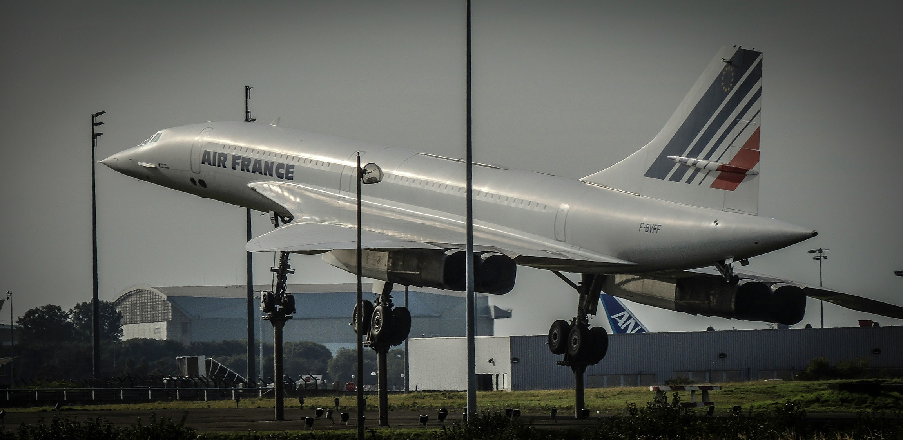
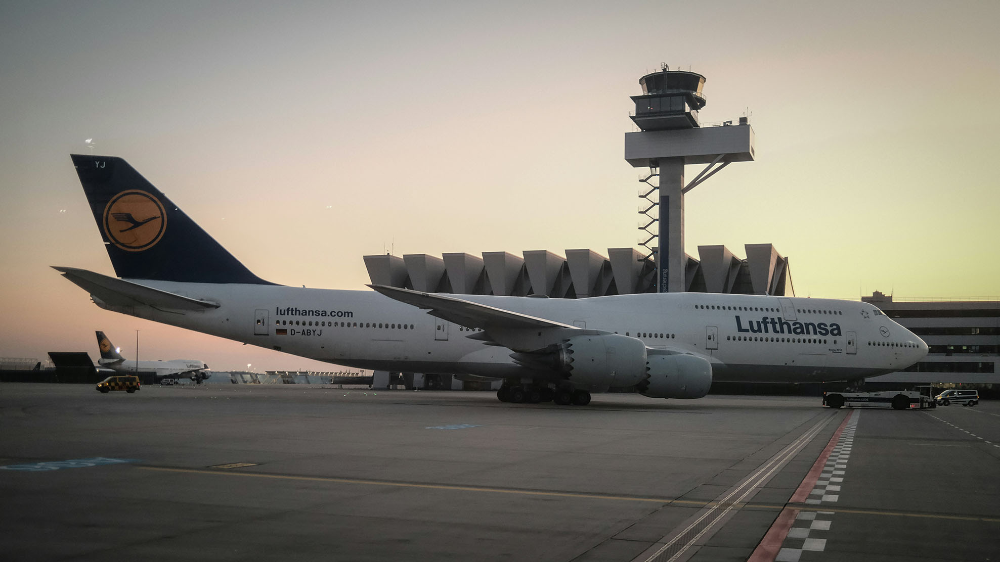
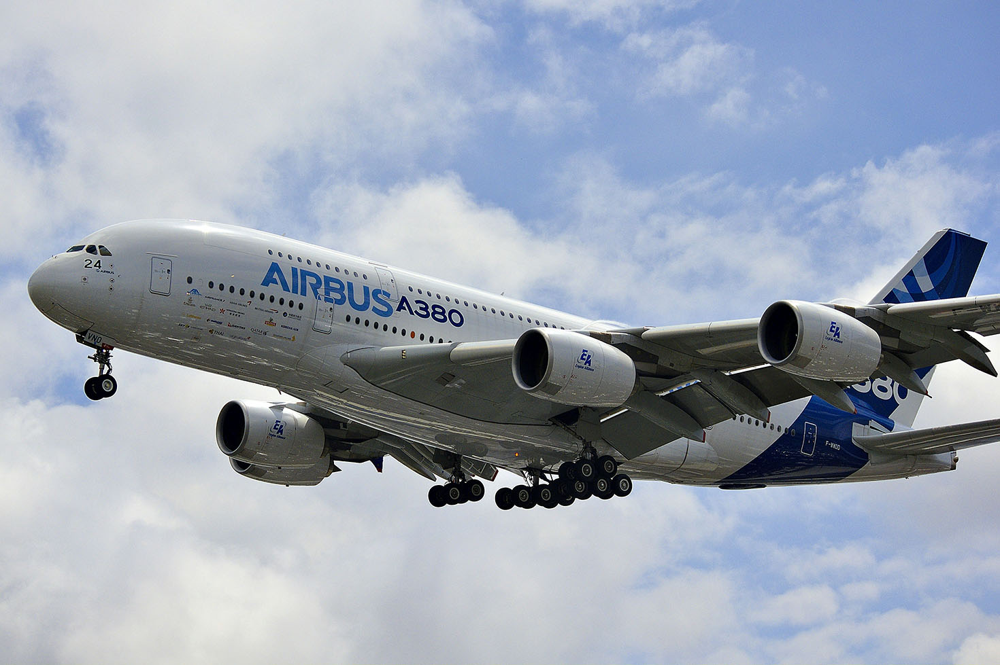

Wright Flyer
Historien om flygplan sträcker sig över mer än ett sekel och har sett otaliga innovationer och framsteg. En av de mest betydelsefulla händelserna var bröderna Wrights flygning med Wright Flyer år 1903. Detta anses vara det första lyckade flygplanet, vilket banade väg för den moderna flygindustrin.

Concorde
Under 1950- och 1960-talet såg vi framväxten av jetflyget med Boeing 707 och senare Concorde. Boeing 707 revolutionerade passagerartransporten genom att erbjuda snabbare och mer effektiv flygning över långa sträckor. Concorde, å andra sidan, var ett supersoniskt passagerarflygplan och symboliserade en tid av lyx och snabbhet inom flygindustrin.

Jumbo Jet
Jumbo Jet, eller Boeing 747, är en legendarisk flygplansmodell som introducerades på 1970-talet och revolutionerade flygindustrin med sin enorma storlek och kapacitet. Med sin ikoniska design och banbrytande teknologi har Jumbo Jet blivit en symbol för lyx och global förbindelse, och fortsätter att vara en viktig del av flygets historia och arv.

Airbus A380
Under senare år har Airbus A320, med sin användning av digitalt fly-by-wire-system, och Boeing 787 Dreamliner, med sin bränsleeffektivitet och kompositmaterial, fortsatt att forma flygindustrins landskap. Airbus A350 är också ett exempel på moderna flygplan som prioriterar bränsleeffektivitet och passagerarkomfort genom användning av avancerade material och tekniker.